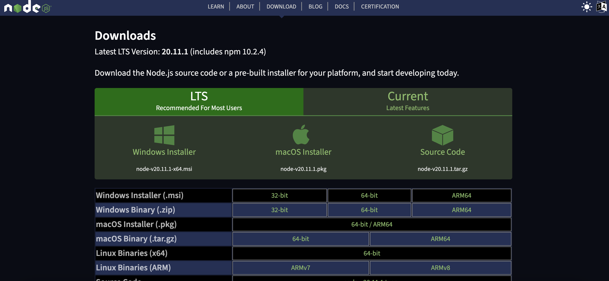
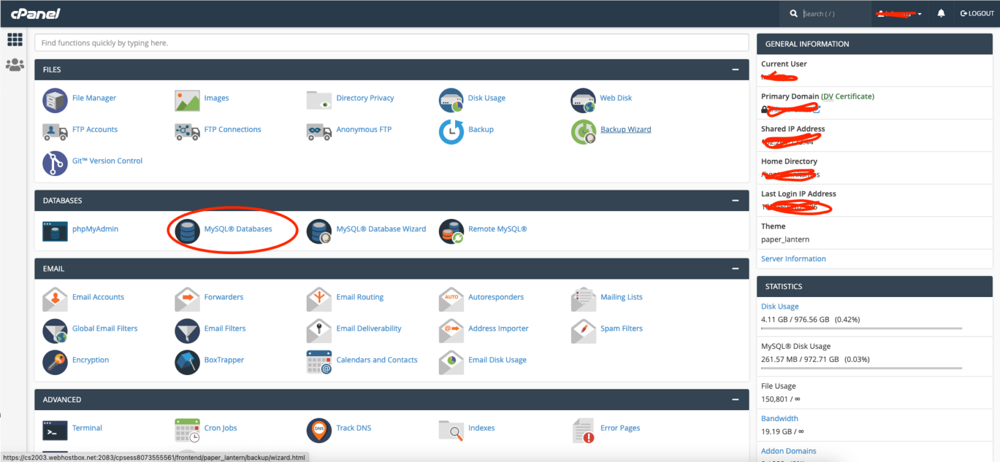
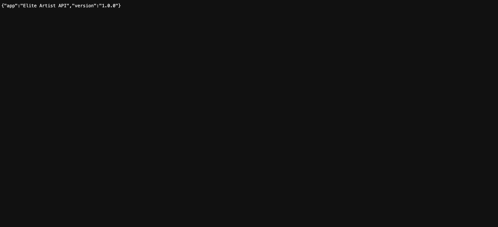
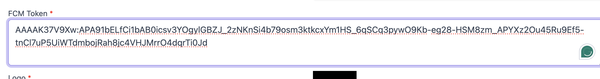

let’s get started with the basic requirement of the server. any server with Linux installed will work but for better results and good performance, we recommend using a good VPS server with 2 GB or more ram.
PHP Version & Extension Required
- PHP Version 7.2+
- Laravel Version 6.0
- MySQLi PHP extension available
- Flutter
- Angular CLI
- Android Studio / SDK / NDK Latest for Android Build
- XCODE Latest For iOS build
FLUTTER
- Mac OS: https://flutter.dev/docs/get-started/install/macos
- Window: https://flutter.dev/docs/get-started/install/windows
- Linux: https://flutter.dev/docs/get-started/install/linux
- Set up an editor: https://flutter.dev/docs/get-started/editor
Installing Angular CLI
Step 1: Install Node.js
Angular bases its build environments on Node.js, and many of its features depend on NMP packages. Conveniently, the Node Package Manager (NPM) client is part of the default Node.js package.
To install Node.js:
- 1. Visit the official Node.js page and download the latest Node.js Windows Installeror MAC or LINUX. 
- 2. Access the download location and double-click the Windows Installer Package.
- 3. Select Next on the initial Node.js Setup Wizard screen.
- 4. Accept the License Agreement and click Next.
- 5. Define the destination folder for the installation and select Next.
- 6. You can customize how to install available features. Make sure that the npm package manager is part of the installation bundle. Click Next to proceed.
- 7. Check the box if you would like to install tools for compiling native modules automatically. They are not mandatory and require an additional 3 GB of space. Select Next to continue.
- 8. Click Install to start the installation process.
- 9. Once the installation is complete, select Finish to exit the Setup Wizard.
- 10. Access the Windows Command Prompt (or PowerShell) and check the Node.js version:
node -v
API Setup on server
The Laravel structure has a couple of framework prerequisites. These prerequisites are fulfilled by the Laravel Homestead virtual machine, so it’s strongly suggested that you use Homestead as your local Laravel environment.
Nonetheless, in case you are not utilizing Homestead, you should ensure your server meets the accompanying necessities:
- PHP >= 7.2
- BCMath PHP Extension
- CType PHP Extension
- JSON PHP Extension
- Mbstring PHP Extension
- OpenSSL PHP Extension
- PDO PHP Extension
- Tokenizer PHP Extension
From Where to Begin?
- Step 1 : Login into cPanel with the credentials.
- Step 2 : After a successful login, click on “MySQL Databases” and create a database. 
- Step 3 : Add your database name and click on create database button. it’s better if you save these details on your machine for future usage.
- Step 4 : Now, Compress a ZIP file of the API folder, and Upload ZIP to the public_html directory on your server, then extract the API.ZIP on the server, extracted files would appear all laravel source code files. move all the codes on the root of public_html.
- public_html/bootstrap/cache/
- public_html/storage/framework/
- public_html/storage/logs/
You need to grant the directory permissions 775 to the respective directories below.
If everything goes correct you should see this image on the link yourdomain/api/public
Setup Admin Panel With API Server
Adding API With Admin Panel
Make Sure to complete API setup before the compiling process for the application.
Open the folder name Admin Panel App.
now open Admin Panel/src/environments/environment.prod.ts and Admin Panel/src/environments/environment.ts file and change the following.

Update baseURL with your API URL
- https://yourapiendpoint.com/public/api/
- https://yourapiendpoint.com/public/storage/images/
Same part should be done on the apps
Adding API With Bands App
Make Sure to complete API setup before the compiling process for the application.
Open the folder name Band App.
Now open the Band App/lib/app/env.dart file and change the following.
Adding API With Venue App
Make Sure to complete API setup before the compiling process for the application.
Open the folder name Venue App.
Now open the Venue App/lib/app/env.dart file and change the following.
Publishing to the Google Play Store
For detailed instructions on publishing your app to the Google Play Store, see the Google Play launch documentation.
Updating the app’s version number
The default version number of the app is 1.0.0. To update it, navigate to the pubspec.yaml file and update the following line:
version: 1.0.0+1
The version number is three numbers separated by dots, such as 1.0.0 in the example above, followed by an optional build number such as 1 in the example above, separated by a +.
Both the version and the build number may be overridden in Flutter’s build by specifying --build-name and --build-number, respectively.
In Android, build-name is used as versionName while build-number used as versionCode. For more information, see Version your app in the Android documentation.
After updating the version number in the pubspec file, run flutter pub get from the top of the project, or use the Pub get button in your IDE. This updates the versionName and versionCode in the local.properties file, which are later updated in the build.gradle file when you rebuild the Flutter app.
How do I build a release from within Android Studio?
In Android Studio, open the existing android/ folder under your app’s folder. Then, select build.gradle (Module: app) in the project panel:

Next, select the build variant. Click Build > Select Build Variant in the main menu. Select any of the variants in the Build Variants panel (debug is the default):

The resulting app bundle or APK files are located in build/app/outputs within your app’s folder.
Publishing to Apple Store Connect
This guide provides a step-by-step walkthrough of releasing a Flutter app to the App Store and TestFlight.
Preliminaries
Xcode is required to build and release your app. You must use a device running macOS to follow this guide. Before beginning the process of releasing your app, ensure that it meets Apple’s App Review Guidelines. In order to publish your app to the App Store, you must first enroll in the Apple Developer Program. You can read more about the various membership options in Apple’s Choosing a Membership guide.
Register your app on App Store Connect
Manage your app’s life cycle on App Store Connect (formerly iTunes Connect). You define your app name and description, add screenshots, set pricing, and manage releases to the App Store and TestFlight. Registering your app involves two steps: registering a unique Bundle ID, and creating an application record on App Store Connect. For a detailed overview of App Store Connect, see the App Store Connect guide.
Register a Bundle ID
Every iOS application is associated with a Bundle ID, a unique identifier registered with Apple. To register a Bundle ID for your app, follow these steps: Open the App IDs page of your developer account. Click + to create a new Bundle ID. Enter an app name, select Explicit App ID, and enter an ID. Select the services your app uses, then click Continue. On the next page, confirm the details and click Register to register your Bundle ID.
Create an application record on App Store Connect
Register your app on App Store Connect: Open App Store Connect in your browser. On the App Store Connect landing page, click My Apps. Click + in the top-left corner of the My Apps page, then select New App. Fill in your app details in the form that appears. In the Platforms section, ensure that iOS is checked. Since Flutter does not currently support tvOS, leave that checkbox unchecked. Click Create. Navigate to the application details for your app and select App Information from the sidebar. In the General Information section, select the Bundle ID you registered in the preceding step. For a detailed overview, see Add an app to your account.

- Open the Xcode Project
- Add the id
- Change the version if needed
- Open the tab build
- Click Archive button
- Wait till end
- Once is done cliek send to the store and wait untill is done
Build Admin
Inside the project folder:
ng build --configuration production --aot
This also performs AoT compilation for even smaller bundles (no Angular compiler, instead, generated compiler output). The bundles are much smaller with AoT if you use Angular 4 as the generated code is smaller. You can test your app with AoT in development mode (source maps, no minification) and AoT by running ng build --aot.
Output
The default output-dir is ./dist, although it can be changed in ./angular-cli.json.
- Now find the dist folder inside your project
- Compress the folder
- Upload to your server
- Unzip the folder
- Change the name as prefere and is done
SMTP EMAIL CONFIGURATION
Step 1:to setup the email you have to reach the env file inside the project API
Step 2: Configure Gmail SMTP Server in Laravel Application
Laravel uses config/mail.php file for storing details used in mail sending. This file contains settings like MAIL_DRIVER, MAIL_HOST, MAIL_PORT, etc. In order to successfully send an email, we need to provide this information.
To add this required information, we need not edit this config/mail.php file, rather we would supply these details accordingly in the .env file.
This, open your .env file which is located in your root directory of our application and checkout for these settings:
- MAIL_DRIVER=smtp
- MAIL_HOST=smtp.yourmail.com
- MAIL_PORT=465
- MAIL_USERNAME=
- MAIL_PASSWORD=
- MAIL_ENCRYPTION=TLS
Step 2: you are done.
PUSHUP NOTIFICATION
Follow this Article https://medium.com/@alaa07996/firebase-push-notifications-with-flutter-6848892a1c15 For More About Notification With Firebase on Flutter
Once you finish the firebase configuration go inside messaging and you can take the FMC Firebase token to add inside the admin setting console
